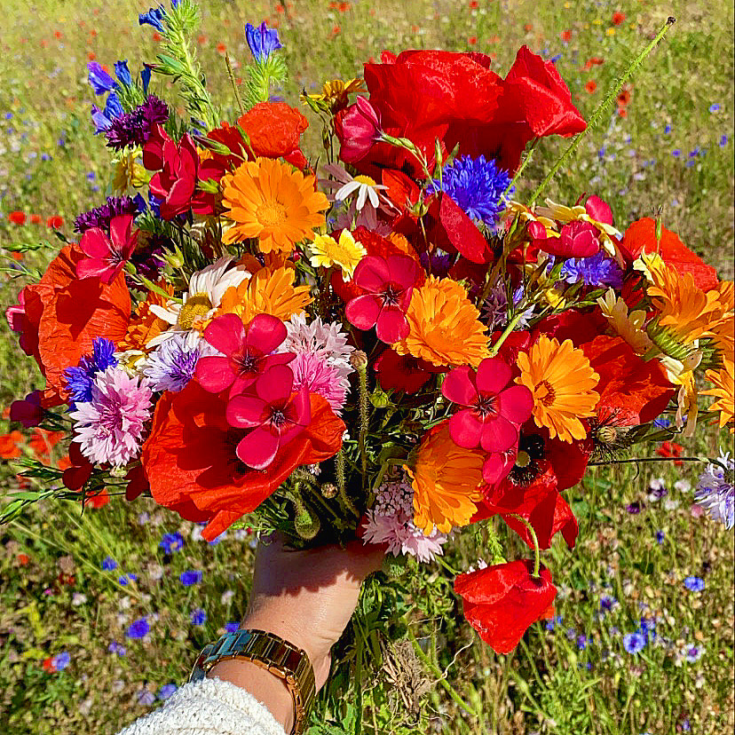
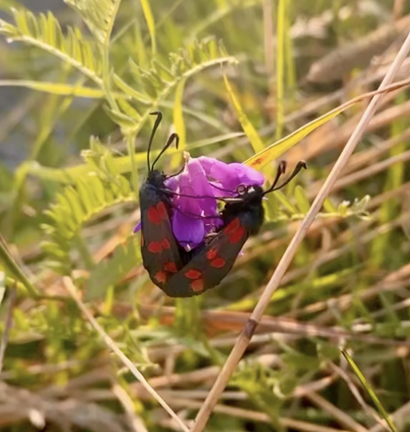
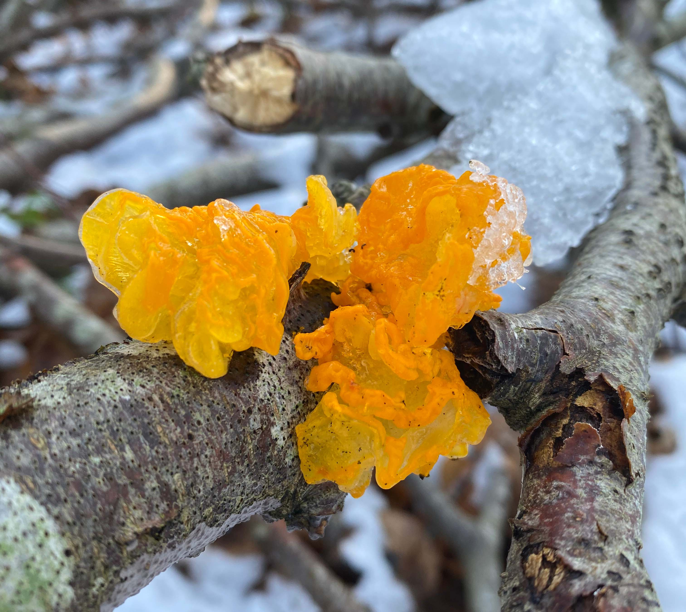
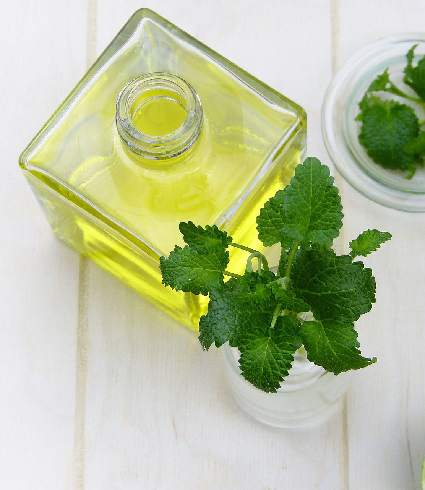
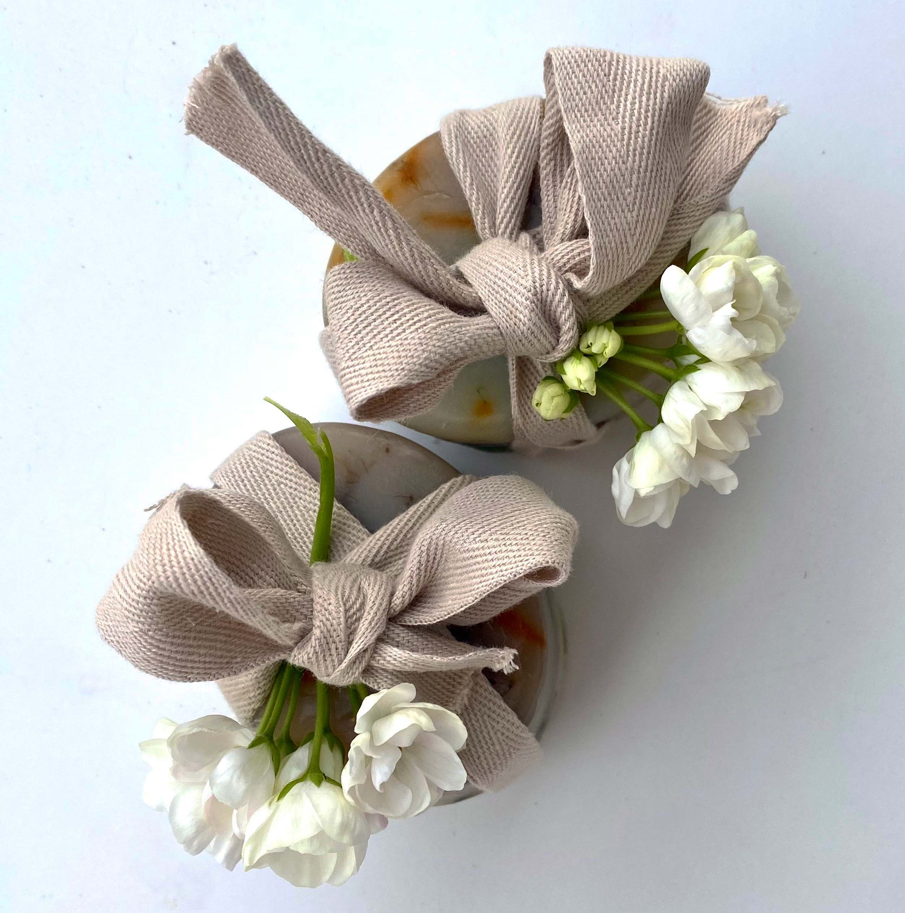
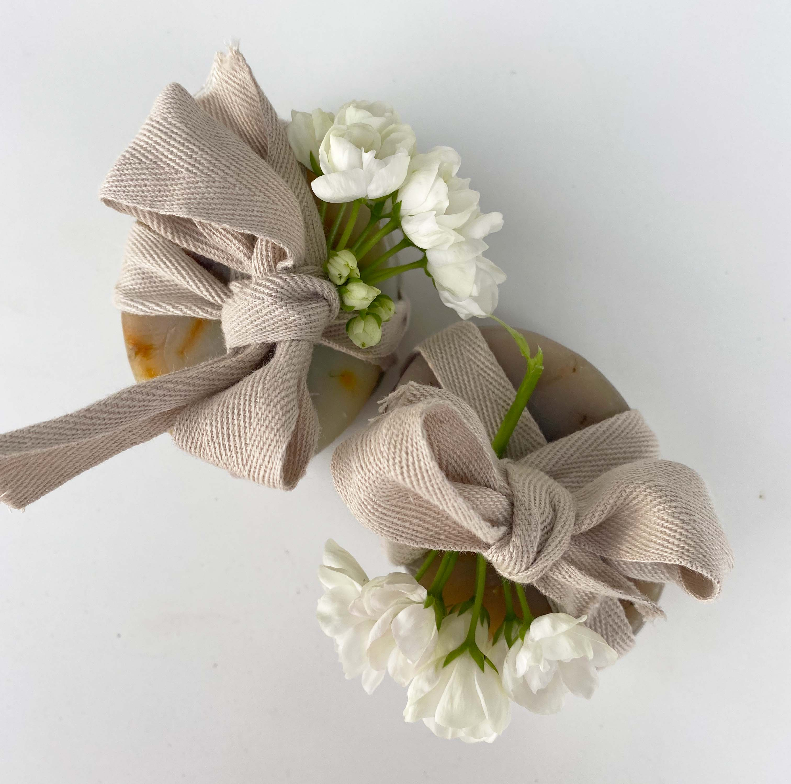
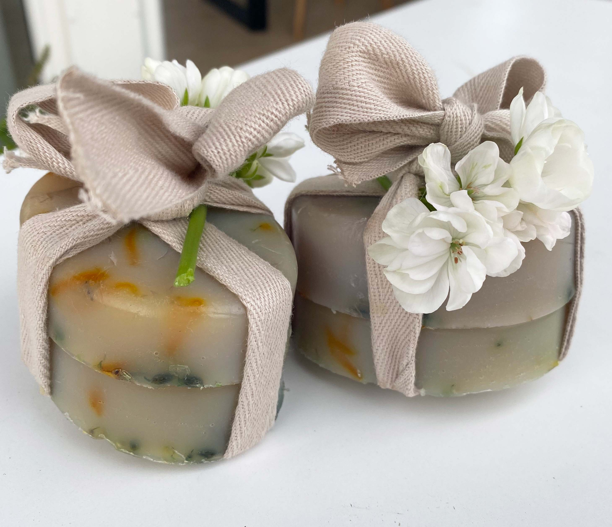

Jeg er en innovativ, nysgerrig & idérig person, der elsker at udfolde mig kreativt
Til daglig har jeg mit eget firma hvor jeg laver websider med WordPress i mindre virksomheder og private personer. Jeg har arbejdet tæt sammen med en selvstændig grafiker i on/off 4 år. Derudover arbejder jeg deltid i min mors it-firma, hvor jeg har en lille afdeling for teknisk support med 4-7 ansatte, der yder hjælp i Zoom og Teams til de store fagforbund i Danmark. Jeg har derudover blandt andet været med til at udvilke læringsindhold og grafik til Staten; Økonomistyrelsen, Hjemrejsestyrelsen, Vejdirektoratet, Udlændinge- og Integrationsministeriet mm.
Jeg er meget omhyggelig, og jeg elsker at nørde med detaljer - om det er håndarbejde, indretning af mit hjem, fotos eller noget helt nyt! Jeg går i dybden med de ting jeg laver, min styrke og svaghed er den samme: jeg er perfektionist og sjældent 100% tilfreds. Jeg kan godt lide at bruge tid på bl.a. planter, dyr, natur, hjemmelavede sæber, olier og stearinlys, male og tegne, være i min hytte, madlavning og træning. Her på siden kommer desuden et lille uddrag af mine personlige kreative projekter


